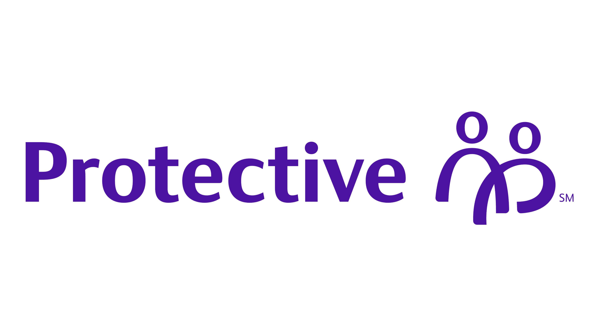

Experience
PricewaterhouseCoopers (PwC)
Phoenix, AZ
Digital Assurance and Transparency Associate
July 2026 – Present
Addicus Advisors
Birmingham, AL
Accounting Intern
January 2026 – May 2026
- Assisted with monthly financial statement preparation and reconciliations
- Supported ERP migration (Sage → Business Central)
- Prepared audit documentation

Protective Life
Birmingham, AL
Internal Audit Intern
August 2025 – December 2025
- Conducted SOX control testing
- Trained new interns
Grant Thornton
Fort Lauderdale, FL
IT Assurance Intern
June 2025 – August 2025
- Performed ITGC and ITAC testing
- Worked with SAP, NetSuite, Workday
- Identified IT risks
Protective Life
Birmingham, AL
Information Technology Audit Intern
February 2025 – April 2025
- Conducted risk-based audits
- Tested ITGCs and ITACs
- Utilized ServiceNow
Protective Life
Birmingham, AL
Internal Audit Intern
August 2024 – February 2025
- Conducted SOX control testing
- Gained knowledge of internal control frameworks
- Utilized Excel, Archer, and SAP